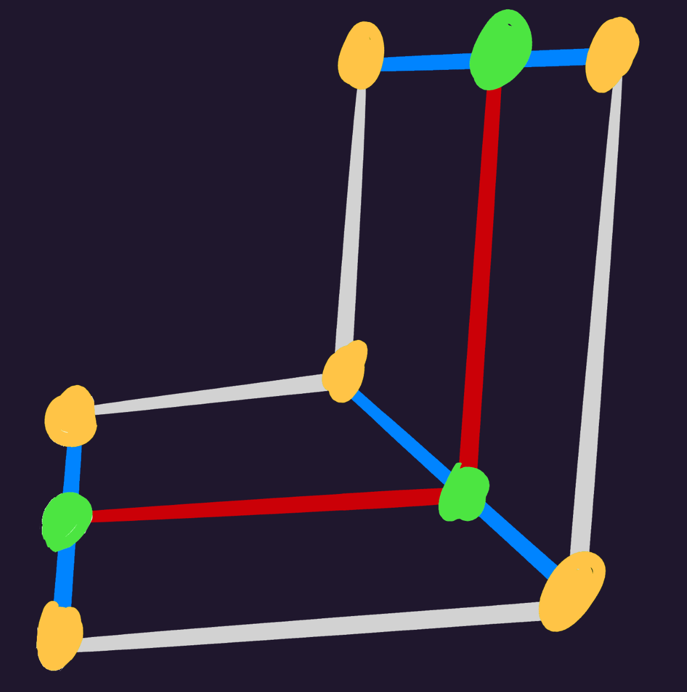

How To Read This
This is a developer-focused document for developing SkelForm runtimes.
This document is written under the assumption that a general-use runtime will be made and accounts for all features and cases, but need not be followed this way for personal runtimes.
Runtime APIs
Both generic and runtime sections are based on their public-facing API functions.
The functions within their sections need not be implemented, and simply exist to split their respective algorithms to be more easily digestible.
Example
All general-use generic runtimes must have an Animate() function that works as
intended (interpolates bones & resets them if needed).
The Animate() function’s implementation is covered in its own section, and the
functions within do not need to be public nor even implemented. All that matters
is Animate() working as intended.
Pseudo Code
All code shown on this document is not meant to be run directly.
Some elements (eg; functions) will lead to their section if clicked.
The language used is Typescript, but with a few concessions:
Numberis replaced withIntorFloatwhere appropriateBooleanshortened toBool
File Structure
The editor exports a unique .skf file, which can be unzipped to reveal:
armature.json- Armature data (bones, animations, etc)atlasX.png- Texture atlas(es), starting from 0editor.json- Editor-only datathumbnail.png- Armature preview imagereadme.md- Little note for runtime devs
This section will only cover the content in armature.json.
Table of Contents
- Armature
- Bones
- Animations
- Atlases
- Styles
- Visuals
- Inverse Kinematics
- Physics
- Initial Fields
- Constructed Bones
Armature
| Key | Type | Default | Description |
|---|---|---|---|
| version | String | "" | Editor version that exported this file |
| baked_ik | Bool | false | Was this file exported with baked IK frames? |
| img_format | String | "PNG" | Exported atlas image format (PNG, JPG, etc) |
| clear_color | Color1 | (0, 0, 0, 0) | Exported clear color of atlas images |
| bones | Bone[] | [] | Array of all bones |
| animations | Animation[] | [] | Array of all animations |
| atlases | Atlas[] | [] | Array of all atlases |
| styles | Styles[] | [] | Array of all styles |
| inverse_kinematics | InverseKinematics[] | [] | Array of all bone inverse kinematics data |
| visuals | Visuals[] | [] | Array of all bone visuals (texture, mesh) |
| physics | Physics[] | [] | Array of all bone physics data |
Bones
| Key | Type | Default | Description |
|---|---|---|---|
| id | Uint | 0 | Bone ID |
| name | String | "" | Name of bone |
| pos | Vec2 | (0, 0) | Position of bone |
| rot | Float | 0 | Rotation of bone |
| scale | Vec2 | (1, 1) | Scale of bone |
| parent_id | Int | -1 | Bone parent ID (-1 if none) |
| tex | String | "" | Name of texture to use |
| zindex | Int | 0 | Z-index of bone (higher index renders above lower) |
| hidden | Bool | false | Whether this bone is hidden |
| tint | Color1 | (255, 255, 255, 255) | Color tint |
| inverse_kinematics_id | Int | -1 | Inverse Kinematics ID |
| visuals_id | Int | -1 | Visuals ID |
| physics_id | Int | -1 | Physics ID |
Inverse Kinematics
Inverse kinematics is stored in the root (first) bone of each set of IK bones.
| Key | Type | Default | Description |
|---|---|---|---|
| family_id | Uint | -1 | The ID of family this bone is in (-1 by default) |
| constraint | String | "None" | Constraint (Clockwise, CounterClockwise) |
| mode | String | "FABRIK" | Mode (FABRIK, Arc) |
| target_id | Uint | -1 | Target bone ID |
| bone_ids | Uint[] | [] | ID of all bones in this family |
| mimic_target | Bool | false | Should the last bone follow target’s rotation? |
| init_constraint | String | constraint | Initial field for constraint2 |
| init_mode | String | mode | Initial field for mode2 |
| init_mimic_target | Bool | mimic_target | Initial field for mimic_target2 |
Visuals
Visual data of each bone (texture & mesh)
| Key | Type | Default | Description |
|---|---|---|---|
| tex | String | "" | Name of texture to use |
| zindex | Int | 0 | Z-index of bone (higher index renders above lower) |
| tint | Color1 | (255, 255, 255, 255) | Multiplicative color tint for texture |
| vertices | Vertex[] | [] | Array of vertices |
| indices | Uint[] | [] | Each index is vertex ID. Every 3 IDs forms 1 triangle. |
| binds | Bind[] | [] | Array of bone binds |
| init_tex | String | "" | Initial field for tex2 |
| init_tint | Color1 | (255, 255, 255, 255) | Initial field for tint2 |
| init_zindex | Int | 0 | Initial field for zindex2 |
Vertex
A mesh is defined by its vertices, which describe how each point is positioned, as well as how the texture is mapped (UV).
| Key | Type | Default | Description |
|---|---|---|---|
| id | Uint | 0 | ID of vertex |
| pos | Vec2 | (0, 0) | Position of vertex |
| uv | Vec2 | (0, 0) | UV of vertex |
| init_pos | Int | pos | Helper for initial vertex position2 |
Bind
Meshes can have ‘binding’ bones to influence a set of vertices. These are the primary method of animating vertices.
| Key | Type | Default | Description |
|---|---|---|---|
| id | Int | -1 | ID of bind |
| is_path | Bool | false | Should this bind behave like a path? |
| verts | BindVert[] | [] | Array of vertex data associated to this bind |
BindVert
Vertices assigned to a bind.
| Key | Type | Default | Description |
|---|---|---|---|
| id | Uint | 0 | ID of vertex |
| weight | Float | 1 | Weight assigned to this vertex |
Physics
| Key | Type | Default | Description |
|---|---|---|---|
| global_pos | Vec2 | (0, 0) | Bone’s position based on physics. Overrides bone.position in inheritance() |
| global_scale | Vec2 | (0, 0) | Bone’s scale based on physics. Overrides bone.scale in inheritance() |
| global_rot | Float | 0 | Bone’s rotation based on physics. Overrides bone.rotation in inheritance() |
| pos_damping | Float | 0 | Higher damping makes position interpolate slower towards bone.position |
| scale_damping | Float | 0 | Higher damping makes scale interpolate slower towards bone.scale |
| rot_damping | Float | 0 | Higher damping makes rotation interpolate slower towards bone.rotation |
| pos_ratio | Float | 0 | Ranges from -1 to 1. -1-0: less Y, 0-1: less X |
| scale_ratio | Float | 0 | Ranges from -1 to 1. -1-0: less Y, 0-1: less X |
| global_orbit | Float | 0 | Bone’s parental orbit based on physics. Overrides orbitRot in inheritance() |
| global_orbit_diff | Float | 0 | Used to offset global_orbit by this much when swaying |
| global_orbit_vel | Float | 0 | Used to calculate velocity when rot_bounce is more than 0 |
| sway | Float | 0 | When bone’s parent is moved, how much should this bone sway? |
| rot_bounce | Float | 0 | Along with sway, makes bone bouncy/wiggly |
Animations
| Key | Type | Default | Description |
|---|---|---|---|
| id | String | 0 | ID of animation |
| name | String | "" | Name of animation |
| fps | Uint | 0 | Frames per second of animation |
| keyframes | Keyframes[] | [] | Data of all keyframes of animation |
Keyframes
Keyframes are defined by their element (what’s animated), as well as either
value or value_str (what value to animate element to)
Eg: element: PosX with value: 20 means ‘Position X = 20 at frame’
| Key | Type | Default | Description |
|---|---|---|---|
| frame | Uint | 0 | frame of keyframe |
| bone_id | Uint | 0 | ID of bone that keyframe refers to |
| element | String | "" | Element to be animated by this keyframe |
| value | Float | 0 | Value to set element of bone to |
| value_str | String | "" | String variant of value |
| next_kf | Int | -1 | Index of the next associated keyframe |
| start_handle | Float | 0.333 | Handle to use for start of interpolation |
| end_handle | Float | 0.666 | Handle to use for end of interpolation |
Atlases
Easily-accessible information about texture atlas files.
| Key | Type | Default | Description |
|---|---|---|---|
| filename | String | "" | Name of file for this atlas |
| size | Vec2 | (0, 0) | Size of image (in pixels) |
Styles
Groups of textures.
| Key | Type | Default | Description |
|---|---|---|---|
| id | Uint | 0 | ID of style |
| name | String | "" | Name of style |
| textures | Texture | [] | Array of textures |
Textures
Note: Coordinates are in pixels.
| Key | Type | Default | Description |
|---|---|---|---|
| name | String | "" | Name of texture |
| offset | Vec2 | (0, 0) | Top-left corner of texture in the atlas |
| size | Vec2 | (0, 0) | Append to offset to get bottom-right corner of texture |
| atlas_idx | Uint | 0 | Index of atlas that this texture lives in |
Initial Fields
Some fields in Bones, Visuals, Inverse Kinematics, and Physics have init_
counterparts. Their value is duplicated from the original field.
While the original field is modified during animation, init_ fields are used
to return the original field back to its initial state (see
ResetBones()).
Constructed Bones
An extra set of bones is recommended for optimization in the Construct()
generic function. This is a clone of the bones array, but with construction
applied to it for use later with Draw().
Generic Runtimes
Generic runtimes handle animations and armature construction.
These runtimes should be engine & render agnostic, with the ‘generic’ nature allowing it to be expandable to other environments.
Example: A generic Rust runtime can be expanded for Rust game engines like Macroquad or Bevy.
Animate()
Table of Contents
Animate()
Interpolates bone fields based on provided animation data, as well as initial states for non-animated fields.
function Animate(
armature: Armature,
anims: Animation[],
frames: Int[],
smoothFrames: Int[],
) {
for (let a = 0; a < anims.length; a++) {
for (let k = 0; k < anims[a].keyframes.length; k++) {
let kf = anims[a].keyframes[k];
// only prev keyframes are considered
if (kf.frame > frames[a]) {
break;
}
// refer keyframe to itself, if there's no next
if (kf.next_kf == -1) {
kf.next_kf = k;
}
const nextKf = anims[a].keyframes[kf.next_kf];
// skip keyframe if it's not the last, and would not be animated
const isLast = kf.next_kf == k;
const isBeforeFrame = nextKf.frame < frames[a];
if (isBeforeFrame && !isLast) {
continue;
}
const f = frames[a];
const sf = smoothFrames[a];
// animate basic fields
let bone = armature.bones[kf.bone_id];
if (kf.element == "PositionX")
interpolateKeyframes(bone.pos.x, kf, nextKf, f, sf);
if (kf.element == "PositionY")
interpolateKeyframes(bone.pos.y, kf, nextKf, f, sf);
if (kf.element == "Rotation")
interpolateKeyframes(bone.rot, kf, nextKf, f, sf);
if (kf.element == "ScaleX")
interpolateKeyframes(bone.scale.x, kf, nextKf, f, sf);
if (kf.element == "ScaleY")
interpolateKeyframes(bone.scale.y, kf, nextKf, f, sf);
if (kf.element == "Hidden") bone.hidden = kf.value == 1;
// animate visual fields
if (bone.visuals_id != -1) {
let visuals = armature.visuals[bone.visuals_id];
if (kf.element == "Texture") visuals.tex = kf.value_str;
if (kf.element == "TintR")
interpolateKeyframes(visuals.tint.r, kf, nextKf, f, sf);
if (kf.element == "TintG")
interpolateKeyframes(visuals.tint.g, kf, nextKf, f, sf);
if (kf.element == "TintB")
interpolateKeyframes(visuals.tint.b, kf, nextKf, f, sf);
if (kf.element == "TintA")
interpolateKeyframes(visuals.tint.a, kf, nextKf, f, sf);
}
// animate inverse kinematics fields
if (bone.ik_family_id != -1) {
let ik = armature.inverse_kinematics[bone.ik_family_id];
if (kf.element == "IkConstraint") ik.constraint = kf.value_str;
if (kf.element == "MimicTarget")
ik.mimic_target = kf.value == 1;
}
}
}
// bones that are not being animated should return to their initial states
resetBones(armature, anims, frames[0], smoothFrames[0]);
}
interpolateKeyframes()
With the provided animation frame, determines the keyframes to interpolate the field by.
The resulting interpolation from the keyframes is interpolated again for smoothing.
function interpolateKeyframes(
field: Float,
prevKf: Keyframe,
nextKf: Keyframe,
frame: Int,
smoothFrame: Int,
): Float {
const totalFrames = nextKf.frame - prevKf.frame;
const currentFrame = frame - prevKf.frame;
// interpolate from current to next keyframe value
const result = interpolate(
currentFrame,
totalFrames,
prevKf.value,
nextKf.value,
nextKf.start_handle,
nextKf.end_handle,
);
// using the requested smoothing frames, interpolate the current field to the target value
const z = { x: 0, y: 0 };
return interpolate(currentFrame, smoothFrame, field, result, z, z);
}
interpolate()
Interpolation uses a modified bezier spline (explanation below).
Note that 2 helper functions are included below the main function.
function interpolate(
current: Int,
max: Int,
startVal: Float,
endVal: Float,
startHandle: Vec2,
endHandle: Vec2,
): Float {
// snapping behavior for Snap transition preset
if(startHandle.y == 999.0 && endHandle.y == 999.0) {
return startVal;
}
if(max == 0 || current >= max) {
return endVal;
}
// solve for t with Newton-Raphson
const initial = current / max;
let t = initial;
for(let i = 0; i < 5; i++) {
let x = cubicBezier(t, startHandle.x, endHandle.x);
let dx = cubicBezierDerivative(t, startHandle.x, endHandle.x);
if(Math.abs(dx) < 1e-5 {
break;
}
t -= (x - initial) / dx;
t = clamp(t, 0.0, 1.0);
}
const progress = cubic_bezier(t, startHandle.y, endHandle.y)
return startVal + (endVal - startVal) * progress
}
// for both functions below, p0 and p3 are always 0 and 1 respectively
function cubicBezier(t: Float, p1: Float, p2: Float): Float {
const u = 1. - t;
return 3. * u * u * t * p1 + 3. * u * t * t * p2 + t * t * t;
}
function cubicBezierDerivative(t: Float, p1: Float, p2: Float): Float {
const u = 1. - t;
return 3. * u * u * p1 + 6. * u * t * (p2 - p1) + 3. * t * t * (1. - p2);
}
Bezier Explanation
Note: the following explanation is incomplete, as it doesn’t include Newton-Rapshon. However, understanding this is not required to implement the code above.
The bezier spline uses the following polynomial:
value =
a * (1 - t)^3 +
b * 3 * (1 - t)^2 * t +
c * 3 * (1 - t) * t^2 +
d * t^3
This can be simplified into 4 points:
| Formula | Coefficient (a, b, c, d) | |
|---|---|---|
| h00 | (1 - t)^3 | startVal |
| h01 | 3 * (1 - t)^2 * t | startHandle |
| h10 | 3 * (1 - t) * t^2 | endHandle |
| h11 | t^3 | endVal |
The above is for a generic bezier spline, however.
In interpolation, startVal and endVal should be 0 and 1 respectively to
represent 0% to 100% of the end value. This allows the algorithm to have a
persistent curve regardless of the actual values being interpolated.
Simplified points:
| Formula | Coefficient (b, c, d) | |
|---|---|---|
| h01 | 3 * (1 - t)^2 * t | startHandle |
| h10 | 3 * (1 -t) * t^2 | endHandle |
| h11 | t^3 | 1 |
Notice that h00 is now gone, as its coefficient, startVal, is always 0 and
would have no effect on the algorithm.
The actual start and end values are applied at the end:
progress = h10 * startHandle + h01 * endHandle + h11
value = start + (end - start) * progress
resetBones()
Animate bones back to their initial states, if they’re not being animated.
This makes use of each bones’ init_ fields (init_pos, init_rot, etc).
Example: animation 1 was played and rotated the arm bone, but animation 1 is not being played anymore. That arm bone must now return to its initial rotation.
function resetBones(
armature: Armature, animations: Animation[], frame: Uint, smoothFrame: Uint
) {
let elementMap = {}
// add every element that's being animated for each bone
anims.forEach(anim => {
anim.keyframes.forEach(kf => {
if(!elementMap[kf.bone_id].contains(kf.element)) {
elementMap[kf.bone_id].push(kf.element)
}
})
jj
const f = frame;
const sf = smoothFrame;
// reset every element that's not in the map back to its initial state
armature.bones.forEach(bone => {
// reset basic fields
if (!elementMap[bone.id]["PositionX"])
interpolate(f, sf, bone.pos.x, bone.init_pos.x, z, z)
if (!elementMap[bone.id]["PositionY"])
interpolate(f, sf, bone.pos.y, bone.init_pos.y, z, z)
if (!elementMap[bone.id]["Rotation"])
interpolate(f, sf, bone.rot, bone.init_rot, z, z)
if (!elementMap[bone.id]["ScaleX"])
interpolate(f, sf, bone.scale.x, bone.init_scale.x, z, z)
if (!elementMap[bone.id]["ScaleY"])
interpolate(f, sf, bone.scale.y, bone.init_scale.y, z, z)
if (!elementMap[bone.id]["Hidden"])
bone.hidden = bone.init_hidden
// reset visual fields
if bone.visuals_id != -1 {
let visuals = armature.visuals[bone.visual_id]
if (!elementMap[bone.id]["Texture"])
visuals.tex = visuals.init_tex;
if (!elementMap[bone.id]["TintR"])
interpolate(f, sf, visuals.tint.r, visuals.init_tint.r, z, z)
if (!elementMap[bone.id]["TintG"])
interpolate(f, sf, visuals.tint.g, visuals.init_tint.g, z, z)
if (!elementMap[bone.id]["TintB"])
interpolate(f, sf, visuals.tint.b, visuals.init_tint.b, z, z)
if (!elementMap[bone.id]["TintA"])
interpolate(f, sf, visuals.tint.a, visuals.init_tint.a, z, z)
}
// reset inverse kinematics fields
if (bone.ik_family_id != -1) {
let ik = armature.inverse_kinematics[bone.ik_family_id]
if (!elementMap[bone.id]["IkConstraint"])
ik.constraint = ik.init_constraint;
if (!elementMap[bone.id]["MimicTarget"])
ik.mimic_target = ik.init_mimic_target;
}]
})
}
Note: most runtimes will have this functionality at the end of Animate(). The separation of functions is purely for documentation purposes.
Construct()
Table of Contents
Construct()
Constructs the armature’s bones with inheritance and inverse kinematics.
function Construct(armature: Armature) {
let constBones = armature.constructed_bones;
// initialize constructed_bones
if (constBones == undefined) {
constBones = clone(armature.bones);
} else {
// constructed_bones may have been used later for drawing
// which sorts them by zindex, so sort back by id
constBones.sort((bone) => bone.id);
}
// 1st inheritance pass
resetInheritance(constBones, armature.bones);
inheritance(constBones, {}, []);
// 2nd inheritance pass: inverse kinematics
if (armature.inverse_kinematics.length > 0) {
let ikRots = inverseKinematics(constBones, armature.inverse_kinematics);
resetInheritance(constBones, armature.bones);
inheritance(constBones, ikRots, []);
}
// 3rd inheritance pass: physics
if (armature.physics.length > 0) {
simulatePhysics(constBones, armature.physics);
resetInheritance(aramture.constructed_bones, armature.bones);
inheritance(constBones, ikRots, armature.physics);
}
// mesh deformation
constructVerts(constBones, armature.visuals);
}
inheritance()
Child bones need to inherit their parent.
function inheritance(bones: Bone[], ikRots: Object, physics: Physics[]) {
for (let b = 0; b < bones.length; b++) {
if (bones[b].parent_id != -1) {
const parent: Bone = bones[bones[b].parent_id];
let orbitRot = bones[bones[b].parent_id as usize].rot;
// apply orbital difference, if rotation resistance physics is active
let phys = physics[bones[b].physics_id];
if (phys != undefined && phys.sway > 0) {
orbitRot -= phys.global_orbit_diff;
}
bones[b].rot += orbitRot;
bones[b].scale *= parent.scale;
// adjust child's distance from player as it gets bigger/smaller
bones[b].pos *= parent.scale;
// rotate child around parent as if it were orbitting
bones[b].pos = rotate(bones[b].pos, parent.rot);
bones[b].pos += parent.pos;
}
// override bone's rotation from inverse kinematics
if (ikRots.get(bones[b].id)) {
bones[b].rot = ikRots.get(bones[b].id);
}
// apply physics, if armature_bones is provided
let phys = physics[bones[b].physics_id];
if (phys != undefined) {
if (phys.rot_damping > 0) {
bones[b].rot = phys.global_rot;
}
if (phys.pos_damping > 0) {
bones[b].pos = phys.global_pos;
}
if (phys.scale_damping > 0) {
bones[b].scale = phys.global_scale;
}
}
}
}
resetInheritance()
Resets the provided constructed_bones to their original transforms.
Must always be called before inheritance().
resetInheritance(constructedBones: Bone[], bones: Bone[]) {
for(let b = 0; b < bones.length; b++) {
constructedBones[b].pos = bones[b].pos;
constructedBones[b].rot = bones[b].rot;
constructedBones[b].scale = bones[b].scale;
}
}
rotate()
Helper for rotating a Vec2.
function rotate(point: Vec2, rot: float): Vec2 {
return Vec2 {
x: point.x * rot.cos() - point.y * rot.sin(),
y: point.x * rot.sin() + point.y * rot.cos(),
}
}
inverseKinematics()
Processes inverse kinematics and returns the final bones’ rotations, which would
later be used by inheritance().
IK data for each set of bones is stored in the root bone, which can be iterated
wth inverse_kinematics.
function inverseKinematics(
bones: Bone[],
inverseKinematics: InverseKinematics[],
): Map<Int, Float> {
let ikRots = new Map<Int, Float>();
for (let family of inverseKinematics) {
// get relevant bones from the same set
if (family.target_id == -1) {
continue;
}
const root: Vec2 = bones[family.bone_ids[0]].pos;
const target: Vec2 = bones[family.target_id].pos;
let familyBones: Bone[] = bones.filter((bone) =>
family.bone_ids.contains(bone.id),
);
// determine which IK mode to use
switch (family.mode) {
case "FABRIK":
for (let i = 0; i < 10; i++) {
fabrik(familyBones, root, target);
}
case "Arc":
arcIk(familyBones, root, target);
}
pointBones(bones, family);
applyConstraints(bones, family);
// add rotations to ikRot, with bone ID being the key
for (let b = 0; b < family.bone_ids.length; b++) {
// last bone of IK should have free rotation
if (b == family.bone_ids.length - 1) {
continue;
}
ikRots.set(family.bone_ids[b].id, bones[family.bone_ids[b]].rot);
}
}
return ikRots;
}
pointBones()
Point each bone toward the next one.
Used by inverseKinematics() to get the final bone’s rotations.
function pointBones(bones: Bone[], family: InverseKinematics) {
let endBone: Bone = bones[family.bone_ids[-1]];
let tipPos: Vec2 = endBone.pos;
for (let i = family.bone_ids.length; i > 0; i--) {
if (i == family.bone_ids.length - 1) {
// end bone should follow target bone rotation, if mimic_target is true
if (family.mimic_target) {
endBone.rot = bones[family.target_id];
}
break;
}
const bone = bones[family.bone_ids[i]];
const dir: Vec2 = tipPos - bone.pos;
bone.rot = atan2(dir.y, dir.x);
tipPos = bone.pos;
}
}
applyConstraints()
Applies constraints to bone rotations (clockwise or counter-clockwise).
- Get angle of first joint
- Get angle from root to target
- Compare against the 2 based on the constraint
- If the constraint is satisfied, apply
rot + baseAngle * 2to bone rotation
function applyConstraints(bones: Bone[], family: InverseKinematics) {
const jointDir: Vec2 = normalize(bones[family.bone_ids[1]].pos - root);
const baseDir: Vec2 = normalize(target - root);
const dir: Float = jointDir.x * baseDir.y - baseDir.x * jointDir.y;
const baseAngle: Float = atan2(baseDir.y, baseDir.x);
const cw: Bool = family.constraint == "Clockwise" && dir > 0;
const ccw: Bool = family.constraint == "CounterClockwise" && dir < 0;
if (ccw || cw) {
family.bone_ids.forEach((id) => {
bones[id].rot = -bones[id].rot + baseAngle * 2;
});
}
}
fabrik()
The FABRIK mode (Forward And Backward Reaching Inverse Kinematics).
Note that this should be run multiple times for higher accuracy (usually 10 times).
Source for algorithm: Programming Chaos’ FABRIK video
function fabrik(bones: Bone[], root: Vec2, target: Vec2) {
// forward-reaching
let nextPos: Vec2 = target;
let nextLength: Float = 0.0;
for (let b = bones.length - 1; b > 0; b--) {
let length: Vec2 = normalize(nextPos - bones[b].pos) * nextLength;
if (isNaN(length)) length = Vec2(0, 0);
if (b != 0) nextLength = magnitude(bones[b].pos - bones[b - 1].pos);
bones[b].pos = nextPos - length;
nextPos = bones[b].pos;
}
// backward-reaching
let prevPos: Vec2 = root;
let prevLength: Float = 0.0;
for (let b = 0; b < bones.length; b++) {
let length: Vec2 = normalize(prevPos - bones[b].pos) * prevLength;
if (isNaN(length)) length = Vec2(0, 0);
if (b != bones.length - 1)
prevLength = magnitude(bones[b].pos - bones[b + 1].pos);
bones[b].pos = prevPos - length;
prevPos = bones[b].pos;
}
}
arcIk()
Arcing IK mode.
Bones are positioned like a bending arch, with the max length being the combined distance of each bone after the other.
function arcIk(bones: Bone[], root: Vec2, target: Vec2) {
// determine where bones will be on the arc line (ranging from 0 to 1)
let dist: Float[] = [0];
const maxLength: Vec2 = magnitude(bones[-1].pos - root);
let currLength: Float = 0;
for (let b = 1; b < bones.length; b++) {
const length: Float = magnitude(bones[b].pos - bones[b - 1].pos);
currLength += length;
dist.push(currLength / maxLength);
}
const base: Vec2 = target - root;
const baseAngle: Float = base.y.atan2(base.x);
const baseMag: Float = magnitude(base).min(maxLength);
const peak: Float = maxLength / baseMag;
const valley: Float = baseMag / maxLength;
for (let b = 1; b < bones.length; b++) {
bones[b].pos = new Vec2(
bones[b].pos.x * valley,
root.y + (1.0 - peak) * sin(dist[b] * PI) * baseMag,
);
const rotated: Float = rotate(bones[b].pos - root, baseAngle);
bones[b].pos = rotated + root;
}
}
simulatePhysics()
Processes all physics:
- Position (
physics.pos_damping) - Scale (
physics.scale_damping) - Rotation (
physics.rot_damping) - Sway (
physics.sway) - Bounce (
physics.rot_bounce)
function simulatePhysics(constructedBones: Bone[], physics: Physics[]) {
for(let b = 0; b < constructed_bones.length; b++) {
if constructedBones[b].physics_id == -1 {
continue;
}
let physics = physics[constructedBones[b].physics_id as usize];
const s = Vec2(0.3, 0.3);
const e = Vec2(0.6, 0.6);
const constBone = constructedBones[b];
const prevPos = physics.global_pos;
// interpolate position
if(physics.pos_damping > 0 || physics.sway > 0) {
let damping = Vec2(physics.pos_damping, physics.pos_damping)
// ratio
if(physics.pos_ratio < 0) {
damping.y *= 1. - Math.abs(physics.pos_ratio);
} else if(physics.pos_ratio > 0) {
damping.x *= 1. - physics.pos_ratio;
}
let phys_pos = physics.global_pos;
phys_pos.x = interpolate(2, damping.x, phys_pos.x, constBone.pos.x, s, e);
phys_pos.y = interpolate(2, damping.y, phys_pos.y, constBone.pos.y, s, e);
}
// interpolate scale
if(physics.scale_damping > 0) {
let damping = Vec2(physics.scale_damping, physics.scale_damping);
// ratio
if(physics.scale_ratio < 0) {
damping.y *= 1. - Math.abs(physics.scale_ratio)
} else if(physics.pos_ratio > 0) {
damping.x *= 1. - physics.scale_ratio
}
let physScale = physics.global_scale;
physScale.x = interpolate(2, damping.x, physScale.x, constBone.scale.x, s, e);
physScale.y = interpolate(2, damping.y, physScale.y, constBone.scale.y, s, e);
}
// interpolate rotation
if(physics.rot_damping > 0) {
const rot = shortest_angle_delta(physics.global_rot, constBone.rot)
physics.global_rot += rot / physics.rot_damping
}
// interpolate parent orbit (rot res, bounce, etc)
const parent = constructed_bones.find(b => b.id == constBone.parent_id)
if(physics.sway > 0 && parent != undefined) {
// 1. get the raw orbit angle between this bone and its parent
const diff = normalize(constBone.pos - parent.pos)
const diffAngle = Math.atan2(diff.y, diff.x)
// 2. interpolate current orbit angle to raw angle
let orbitBuffer = shortest_angle_delta(physics.global_orbit, diffAngle)
// 3. apply bounce to orbit angle
if(physics.rot_bounce > 0 && physics.rot_bounce <= 1) {
orbitBuffer += physics.global_orbit_vel / (2 - physics.rot_bounce)
physics.global_orbit_vel = orbitBuffer
}
// 4. apply orbit buffer
physics.global_orbit += orbitBuffer / 10
// 5. swing orbit based on position momentum
const vel = normalize(physics.global_pos - prevPos)
const angle = Math.atan2(-vel.y, -vel.x)
const velRot = shortest_angle_delta(physics.global_orbit, angle)
const strength = magnitude(physics.global_pos - prevPos) / 1000
physics.global_orbit += velRot * strength * physics.sway
// 6. apply difference in raw angle and orbit
physics.global_orbit_diff = diffAngle - physics.global_orbit
}
}
}
constructVerts()
Constructs vertices, for bones with mesh data.
Note: a helper function (inheritVert()) is included in the code block below
function constructVerts(bones: Bone[], visuals: Visuals[]) {
for(let b = 0; b < bones.length; b++) {
if bones[b].visuals_id == -1 {
continue;
}
let visual = visuals[bones[b].visuals_id];
const bone: Bone = bones[b]
// Move vertex to main bone.
// This will be overridden if vertex has a bind.
for(let v = 0; v < visual.vertices.length; v++) {
visual.vertices[v].pos = visual.vertices[v].init_pos;
visual.vertices[v] = inheritVert(visual.vertices[v].pos, bone)
}
for(let bi = 0; bi < visual.binds.length; bi++) {
let boneId = visual.binds[bi].bone_id
if boneId == -1 {
continue;
}
bindBone: Bone = bones.find(bone => bone.id == bId))
bind: Bind = visual.binds[bi]
for(let v = 0; v < bind.verts.length; v++) {
id: Int = bind.verts[v].id
if !bind.isPath {
// weights
const vert: Vertex = visual.vertices[id]
const weight: Float = bind.verts[v].weight
const endPos: Vec2 = inheritVert(vert.init_pos, bindBone) - vert.pos
vert.pos += endPos * weight
continue
}
// pathing
// Check out the 'Pathing Explained' section below for a
// comprehensive explanation.
// 1.
// get previous and next bind
const prev: Int = bi > 0 ? bi - 1 : bi;
const next: Int = min(bi + 1, visual.binds.length - 1);
const prevBone: Bone = bones.find(bone => bone.id == visual.binds[prev].bone_id);
const nextBone: Bone = bones.find(bone => bone.id == visual.binds[next].bone_id);
// 2.
// get the average of normals between previous and next bind
const prevDir: Vec2 = bindBone.pos - prevBone.pos;
const nextDir: Vec2 = nextBone.pos - bindBone.pos;
const prevNormal: Vec2 = normalize(Vec2.new(-prevDir.y, prevDir.x));
const nextNormal: Vec2 = normalize(Vec2.new(-nextDir.y, nextDir.x));
const average: Vec2 = prevNormal + nextNormal;
const normalAngle: Float = atan2(average.y, average.x);
// 3.
// move vert to bind, then rotate it around bind by normalAngle
const vert: Vertex = visual.vertices[id];
vert.pos = vert.initPos + bindBone.pos;
const rotated: Vec2 = rotate(vert.pos - bindBone.pos, normalAngle);
vert.pos = bindBone.pos + (rotated * bind.verts[v].weight);
visual.vertices[id] = vert;
}
}
}
}
function inheritVert(pos: Vec2, bone: Bone): Vec2 {
pos *= bone.scale
pos = rotate(pos, bone.rot)
pos += bone.pos
return pos
}
Pathing Explained
Instead of inheriting binds directly, vertices can be set to follow its bind like a line forming a path:

- Green - bind bone
- Orange - vertices
- Red - imaginary line from bind to bind
- Blue - Normal surface of imaginary line
Vertices will follow the path, distancing from the bind based on its surface angle and initial position from vertex to bind.
The following steps can be iterated per bind:
1. Get Adjacent Binds
To form the imaginary line, get the adjacent binds just before and just after the current bind. In particular:
- If current bind is first: get only next bind
- If current bind is last: get only previous bind
- If current bind is neither: get both previous and next bind
2. Get Average Normal Angle
Notice that in the diagram, the middle bind’s surface is at a 45° angle.
To do so:
- Get line from previous to current bind
- Get line from current to next bind
- Add up both lines
- Get angle of combined line
3. Rotate Vertices
- Reset vertex position to its initial position + bind position
- Rotate vertex around bind with angle from 2nd step
GetBoneTexture()
Helper function to provide the final Texture that a bone will use, based on
the provided tex name and styles.
function GetBoneTexture(boneTex: String, styles: Style[]): Texture {
styles.forEach(style => {
const tex: Texture = style.textures.find(tex => tex.name == boneTex);
if(tex != undefined) {
return tex;
}
});
return undefined;
}
FormatFrame()
Provides the appropriate frame based on the animation, along with looping and reverse options.
function FormatFrame(
frame: Int,
animation: Animation,
reverse: Bool,
isLoop: Bool,
): Int {
const lastFrame: Int = animation.keyframes[-1].frame;
if (isLoop) {
frame %= lastFrame + 1;
}
if (reverse) {
frame = lastFrame - frame;
}
return frame;
}
TimeFrame()
Provides the appropriate frame based on time given (as duration).
The implementation of time is highly dependent on the language and
environment, but any conventional method should do.
If better suited, this function can be re-implemented for engine runtimes.
function TimeFrame(
time: Time,
animation: Animation,
reverse: Bool,
isLoop: Bool,
): Int {
const elapsed: Float = time.asMillis() / 1e3;
const frametime: Float = 1.0 / animation.fps;
let frame: Int = elapsed / frametime;
frame = formatFrame(frame, animation, reverse, isLoop);
return frame;
}
CheckBoneFlip()
Flips the bone’s rotation if either of the provided scale axes is negative (but not both).
This is the standard method of ‘flipping’ sprites, hence it uses an arbitrary scale rather than the bone’s own.
function CheckBoneFlip(bone: Bone, scale: Vec2) {
const both: Bool = scale.x < 0 && scale.y < 0;
const either: Bool = scale.x < 0 || scale.y < 0;
if(either && !both) {
bone.rot = -bone.rot
}
}
Engine Runtimes
Engine runtimes handle specific environments such as loading and drawing, and must have a friendly user-facing API.
These runtimes may depend on a generic one to do the heavy lifting, leaving it to handle features that are best dealt with the engine (eg; rendering).
Example: The Macroquad runtime depends on a generic Rust runtime, and takes care of drawing the bones with Macroquad after animation logic has processed.
Load() - Engine
Reads a SkelForm file (.skf) and loads its armature and textures.
The below example assumes Texture2D is the engine-specific texture object.
function Load(zipPath: String): (Armature, Texture2D[]) {
const zip: Zip = ZipLib.open(zipPath);
const armatureJson: String = zip.byName("armature.json");
const armature: Armature = Json.new(armatureJson);
let textures: Texture2D[];
armature.atlases.forEach(atlas => {
Image img = zip.byName(atlas.filename);
textures.push(Texture2D(img));
})
return (armature, textures);
}
Animate() - Engine
Simply calls Animate() from the generic runtime.
function animate(
armature: Armature,
animations: Animation[],
frames: Int[],
smoothFrames: Int[],
) {
GenericRuntime.animate(armature, animations, frames, smoothFrames);
}
Construct() - Engine
Calls Construct() from the generic runtime, then modifies constructed bones
based on user options and engine quirks.
ConstructOptions {
position: Vec2,
scale: Vec2,
velocity: Vec2,
}
function Construct(armature: Armature*, options: ConstructOptions): Bone[] {
// this will modify armature.constructed_bones, as well as armature.bones for physics fields
GenericRuntime.construct(armature)
for(let b = 0; b < armature.bones.length; b++) {
let const_bone = armature.constructed_bones[b];
// engine quirks like negative Y or reversed rotations can be applied here
const_bone.pos.y = -const_bone.pos.y;
const_bone.rot = -const_bone.rot;
// apply user options
const_bone.scale *= options.scale;
const_bone.pos *= options.scale;
const_bone.pos += options.position;
// bones must be flipped if scale is in the negatives
GenericRuntime.checkBoneFlip(bone, options.scale)
// velocity only affects position for physics
if(const_bone.physics_id != -1) {
let physics = armature.physics[const_bone.physics_id];
physics.global_pos -= options.velocity;
}
// engine quirks & user options applied to vertices
if(const_bone.visuals_id != -1) {
let visuals = armature.physics[const_bone.visuals_id];
visuals.vertices.forEach(vert => {
vert.pos.y = -vert.pos.y;
vert.pos *= options.scale;
vert.pos += options.position;
})
}
}
}
Draw()
Uses the bones from Construct() (usually armature.constructed_bones) to draw
the armature.
Propagated visibility is handled via a fixed Bool array.
function Draw(
bones: Bone[],
visuals: Visuals[],
atlases: Texture2D[],
styles: Style[],
) {
// bones with higher zindex should render first
bones.sort((a, b) => {
if (a.visuals_id == -1 || b.visuals_id == -1) {
return -1;
}
const visualsA = visuals[a.visual_id];
const visualsB = visuals[b.visual_id];
return visualsA.zindex - visualsB.zindex;
});
// initialize a fixed array of false, for propagated visibility
let hiddens = new Array(bones.length).fill(false);
for (let bone of bones) {
if (bone.visuals_id == -1) {
continue;
}
const visual = visuals[bone.visual_id];
// save this bone's hidden status so it can be propagated to its children,
// and ignore rendering if it's hidden
let hidden = bone.hidden || false;
if (bone.parent_id != -1 && hiddens[bone.parent_id]) {
hidden = true;
}
hiddens[b] = hidden;
if (hidden) {
continue;
}
// get active texture
const tex = GenericRuntime.getBoneTexture(visual.tex, styles);
if (!tex) {
continue;
}
// use tex.atlasIdx to get the atlas that this texture is in
const atlas = atlases[tex.atlasIdx];
// crop the atlas to the texture
// here, clip() is assumed to be a texture clipper that takes:
// (image, top_left, bottom_right)
// do what is best for the engine
const realTex = clip(atlas, tex.offset, tex.size);
// render bone as mesh
if (visual.vertices.length > 0) {
drawMesh(bone, visual, tex, realTex);
continue;
}
// A lot of game engines have a non-center sprite origin.
// In this case, the origin is top-left of the sprite.
// SkelForm uses center origin, so it must be adjusted like so.
const pushCenter: Vec2 = (tex.size / 2) * bone.scale;
// render bone as regular rect
drawTexture(realTex, bone.pos - pushCenter);
}
}
FormatFrame()
Simply calls FormatFrame() from the generic runtime.
function FormatFrame(
frame: Int,
animation: Animation,
reverse: Bool,
isLoop: Bool,
) {
GenericRuntime.formatFrame(frame, animation, reverse, isLoop);
}
TimeFrame()
Either calls TimeFrame() from the generic runtime, or is re-implemented to
better fit the engine/environment that the runtime is made for.
function TimeFrame(
time: Time,
animation: Animation,
reverse: Bool,
isLoop: Bool,
) {
GenericRuntime.timeFrame(time, animation, reverse, isLoop);
// or, copy it's implementation with a more appropriate Time type from the engine
}